Регулярные выражения - это объект, описывающий символьный шаблон, который используется для выполнения поиска и операции поиска в тексте с заменой
С помощью конструктора RegExp() - конструктор принимает в себя два аргумента (второй не обязательный). Первый аргумент - это тело регулярного выражения
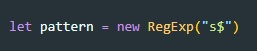С помощью литералов //
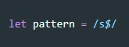регулярное выражение /java/ совпадает со всеми строками, содержащими подстроку "java"
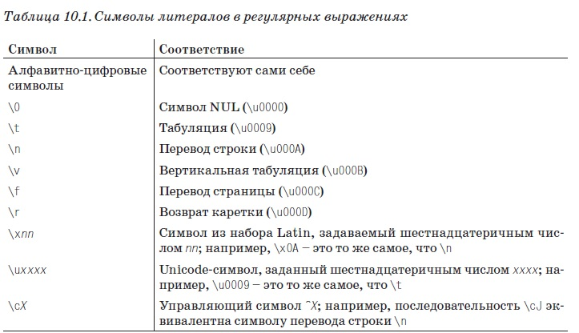символ \ - cпециальный символ для символов обычно обрабатываемых буквально, означает что следующий символ является специальным и не должен интерпретироваться буквально
Отдельные символы могут объединяться в классы символов путем помещения их в квадратные скобки. Класс символов соответствует любому символу содержащемуся в этом классе. Например - выражение /[abc]/ соответствет одному из символов: a,b или c
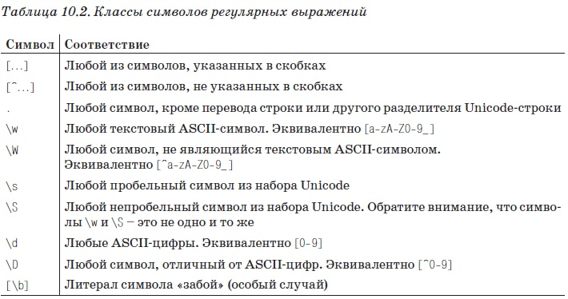Мы можем описать число из двух цифр как /\d\d/ или из 4 цифр как /\d\d\d\d/
Что бы указать сколько раз можно повторяться элемент регулярного выражения. Символ обозначающий повторение всегда следует за шаблоном к которому они применяются.
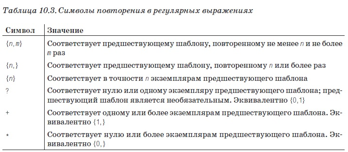пример
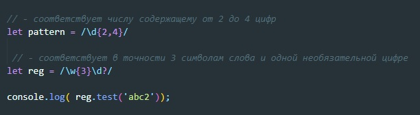Символ вертикальной черты ( | ) служит для разделения альтернатив. Пример:
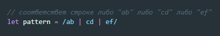Круглые скобки имеют в регулярных выражениях несколько значений. Одно из них - группировка отдельных элементов в одно подвыражение. Пример:
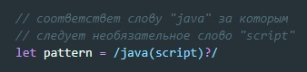Якорные элементы закрепляют шаблон в определенной позиции в строке. Например, что бы найти определенное слово Jaba (который будет отдельным словом) мы можем использовать регулярное выражение:
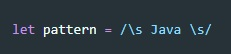\s - пробел, т.е. вокруг слова должны быть пробелы, но в этом случае не будут найдены слова в конце предложения т.к. справа от слова будет стоять точка. Поэтому здесь лучше использовать якоря:
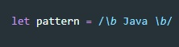\b - обозначает границу слова
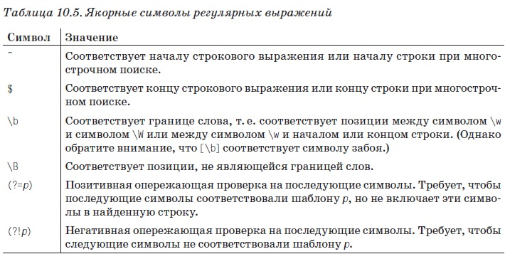Флаги задают правила соответствия шаблонам. Флаги указываются не между символами слеша (/), а после второго из них
флаг i - указывает, что поиск по шаблону не должен быть чувствителен к регистру.
флаг g - поиск должны быть глобальным т.е. должны быть найдены все соответствия в строке.
флаг m - выполняет поиск по шаблону в многострочном режиме.
Метод search() - он принимает в качестве аргумента регулярное выражение и возвращает либо позицию первого символа найденного в подстроке, либо -1 если соответствий не найдено. пример:
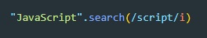вернет 4 так как отсчет начинается с 0. Этот метод не поддерживает глобальный поиск и игнорирует флаг g
Метод replase() - выполняет операцию поиска с заменой, он принимает в качестве первого аргумента регулярное выражение и строку замены в качестве второго аргумента. Важно отметить, что данный метод не изменяет текущую строку, он возвращает новую чтроку. Пример
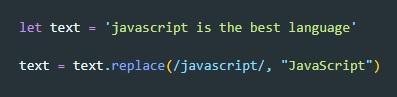Так же метод replase может принимать в качестве второго аргумента callback функцию, Эта функция принимает в качестве аргументов три элемента
пример
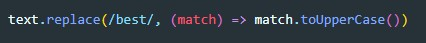Метод match() - принимает в качестве аргумента регулярное выражение и возвращает массив содержащий результаты поиска. Если метод match() не имеет флага g то он не выполнит поиск глобально и вернет первое попавшее выражение.
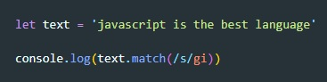Метод split() - разбивает строку на массив подстрок используя аргумент регулярного выражения в качестве разделителя
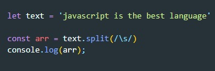Метод exec() - принимает в качестве аргумента строку и возвращает массив с совпадением. Если совпадений нет, вернет null. В отличии от метода match() этот метод всегда вернет первое попавшее совпадение не зависимо есть ли у патерна флаг g
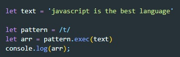Метод test() - принимает в качестве аргумента строку и возвращает true если строка соответствует регулярному выражению.
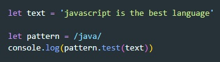source - содержит текст регулярного выражения
global - булевое значение имеется ли флаг g у паттерна
ignoreCase - булевое значение имеется ли флаг i у паттерна
multiline - булевое значение имеется ли флаг m у паттерна
email - /\w+@\w+\.\w{2,3}/g
tel - /\+?[78]([-()]*\d){10}/g